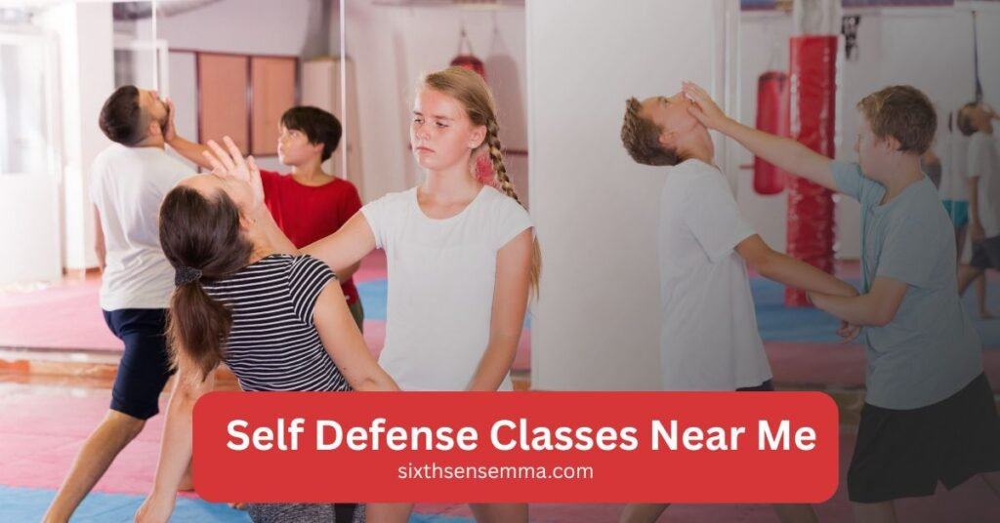
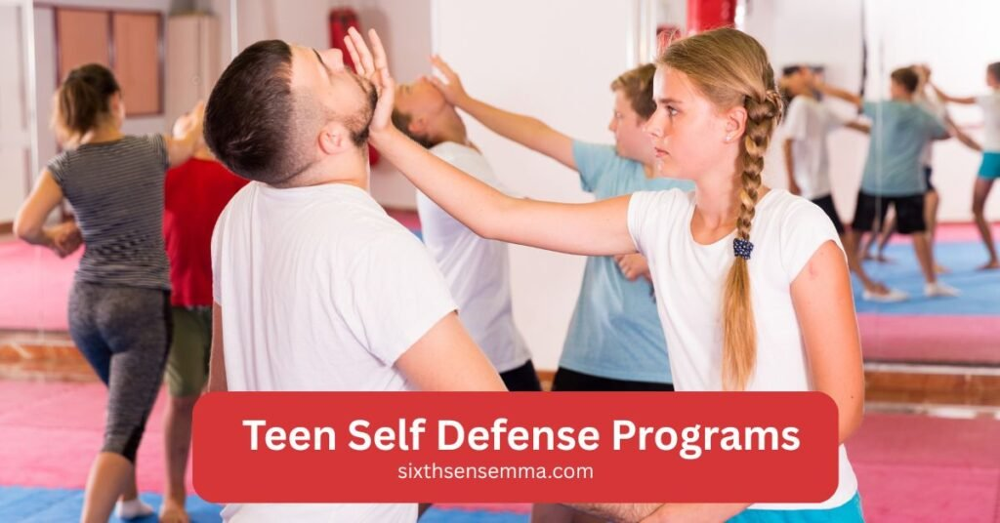
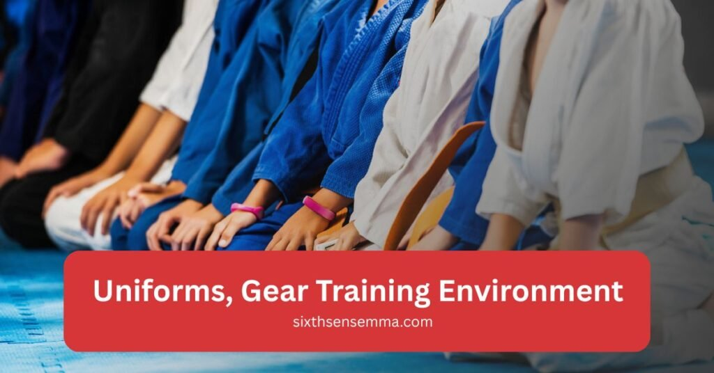

Self Defense Classes Near Me Sixth Sense MMA

Finding self defense classes near me can feel tricky, but Sixth Sense MMA makes the choice simple. Training here is not only about learning to defend against an attack, it is about building confidence, fitness real life self defense skills. Each program connects people to a supportive martial arts community where learning is personal and practical.
Our Self Defense Programs
- Kids Self Defense Programs
- Teen Self Defense Programs
- Adult Self Defense Programs
- Women’s Self Defense Classes
Kids Self Defense Programs
Children benefit most when they start early. Sixth Sense MMA offers structured self-defense classes that mix play, discipline clear instruction. These sessions give kids the ability to defend themselves while also learning respect and teamwork. Parents also like that kids get a healthy workout and learn to respond calmly, not with aggression, in tough moments.
Intro to Jiu Jitsu (Ages 4 to 12)
This beginner jiujitsu course gives kids a taste of basic self defense techniques. They learn how to stay safe, roll react to grabs without fear. Movements are simple, with an emphasis on instinctive movements that kids can use if ever faced with an attacker. Beyond the drills, the class builds a habit of regular fitness and a sense of belonging to a supportive community.
Little Champions (Ages 4 to 7)
For the youngest group, lessons are playful but practical. Instructors teach balance, falling safely basic martial arts skills like controlled strikes and blocks. Kids also practice situational awareness, learning when to stand strong and when to get help. Parents see changes quickly: kids become more confident, more focused less likely to be targets of bullying or violence.
Rising Champions (Ages 8 to 12)
Older children start using stronger self defense techniques and train with more realistic drills. They learn to defend against holds, practice spar sessions start applying movement under light pressure. Classes mix kickboxing style strikes, safe ground drills anti bullying lessons. This program helps kids step into teen years with a sharp mind, fit body confidence to stand up for themselves without using unnecessary aggression.
Teen Self Defense Programs
Teen years bring new challenges self defense classes help young people deal with them in safe and positive ways. Sixth Sense MMA has programs that keep teens active, disciplined better prepared if faced with violence or tough situations. Training gives them a mix of fitness, skill the confidence to make smarter choices when under pressure.

Teen Brazilian Jiu Jitsu
This jiujitsu course is tailored for teenagers who want more than just a sport. Students learn how to use body weight, grips basic self defense techniques to escape or control an attacker. Classes involve drills, controlled spar sessions plenty of practice on the ground. It is not about aggression but about gaining the ability to defend safely and responsibly. Teens also notice improvements in personal safety, discipline their overall fitness.
Teen Muay Thai Classes
These classes introduce striking in a structured way. Teens learn controlled punches, kicks movement that work in both martial arts competition and real world defense situations. Instructors guide them through drills that improve balance, technique reaction time. Training feels like a strong workout, keeping teens mentally sharp and physically fit. Many find that the practice reduces stress, builds lasting confidence gives them a healthy outlet for energy.
Adult Self Defense Programs
Adults often search for self defense classes near me to improve both fitness and personal safety. Sixth Sense MMA offers programs that balance martial arts training with practical self defense techniques that work in real life. Classes cover ground defense, striking stress control, giving adults the confidence to handle defense situations while also enjoying a strong workout.
Adult Brazilian Jiu Jitsu Fundamentals
This self defense course focuses on the basics of jiujitsu. Students practice escapes, holds instinctive movements that build a strong foundation for defense against an attacker. Every session mixes drill work with safe spar time, helping adults build new skills step by step. It is a supportive way to grow strength, balance mental resilience without pressure.
Advanced Techniques & Strategy
- Learning advanced grips and sweeps that improve control during defense.
- Practicing counters for common self defense techniques used in real world situations.
- Adding pressure drills that push reaction time and improve decision making.
- Mixing ground skills with kickboxing style strikes for more realistic training.
- Building strategies for dealing with multiple threats while staying calm and focused.
Adult Muay Thai Training
This program teaches controlled punches, kicks, knees elbows, all applied in a self defense class setting. Instructors focus on technique, footwork movement that prepare students for both fitness and personal safety. Sessions are energetic, giving a mix of workout conditioning and defense skills that feel natural over time.
Open Mat Sessions (Flexible Weekly Training)
Adults who want more practice can join open mat hours. These are in person training slots where students repeat techniques, spar work on what they learned in class. It is flexible and supportive, with no set plan, so people can focus on their weak spots or just enjoy a relaxed training flow. Many find open mat time useful for building confidence and testing new skills in a friendly environment.
Women’s Self Defense Classes
Women often search for self defense classes near me that feel practical and safe. Sixth Sense MMA offers women’s self defense programs designed to build confidence while teaching easy to use self defense techniques. Sessions focus on staying calm, reacting fast handling real world situations without fear. Training also doubles as a solid fitness workout, making the body stronger and the mind sharper.
Confidence & Boundary Setting Skills
These classes go beyond basic drills. Women are shown by instructors how to spot risky moments early and set firm boundaries before violence starts. Students practice instinctive movements, strikes simple ways to stop an attacker or de escalate when threatened. Over time, women feel more confident moving through daily life, knowing they have both the skills and the mindset to stay safer.
Upcoming Self Defense for Women Program
Sixth Sense MMA is preparing a new women’s self defense program that blends martial arts with real world scenarios. It will include lessons on personal safety, situational awareness how to react under stress. This program targets beginners, so you don’t need any prior self defense course experience. Women of all ages can expect supportive instruction, practical drills a training space where empowerment feels natural and lasting.
Adult Self Defense Programs
Adults often search for self defense classes near me to improve both fitness and personal safety. Sixth Sense MMA offers programs that balance martial arts training with practical self defense techniques that work in real life. Classes cover ground defense, striking stress control, giving adults the confidence to handle defense situations while also enjoying a strong workout.
Adult Brazilian Jiu Jitsu Fundamentals
This self defense course focuses on the basics of jiujitsu. Students practice escapes, holds instinctive movements that build a strong foundation for defense against an attacker. Every session mixes drill work with safe spar time, helping adults build new skills step by step. It is a supportive way to grow strength, balance mental resilience without pressure.
Advanced Techniques & Strategy
- Learning advanced grips and sweeps that improve control during defense.
- Practicing counters for common self defense techniques used in real world situations.
- Adding pressure drills that push reaction time and improve decision making.
- Mixing ground skills with kickboxing style strikes for more realistic training.
- Building strategies for dealing with multiple threats while staying calm and focused.
Adult Muay Thai Training
This program teaches controlled punches, kicks, knees elbows, all applied in a self defense class setting. Instructors focus on technique, footwork movement that prepare students for both fitness and personal safety. Sessions are energetic, giving a mix of workout conditioning and defense skills that feel natural over time.
Open Mat Sessions (Flexible Weekly Training)
Adults who want more practice can join open mat hours. These are in person training slots where students repeat techniques, spar work on what they learned in class. It is flexible and supportive, with no set plan, so people can focus on their weak spots or just enjoy a relaxed training flow. Many find open mat time useful for building confidence and testing new skills in a friendly environment.
What to Expect in Our Classes
Anyone searching for self defense classes near me wants to know what training will actually feel like. At Sixth Sense MMA, classes are built around a balance of fitness, practical self defense techniques a friendly, supportive atmosphere. From the first course session, new students notice how the focus is on building real skills while keeping every class engaging and accessible. You do not just learn to block an attack or throw a strike; you learn how to apply self defense in ways that build long term confidence.
Every program starts with clear instruction from experienced instructors who adapt to each student’s ability level. No matter if you are brand new to martial arts or already familiar with kickboxing or jiujitsu, the approach is simple and direct. You get step by step training that teaches how to defend against an attacker, while also improving overall fitness and personal safety. Classes are in person, interactive designed to prepare you for real world situations instead of unrealistic routines.
Safety, Instructors Small Group Focus
Safety always comes first. Classes run in small groups so every student receives attention, feedback guidance on proper technique. This setup keeps training effective while reducing the risk of injury. Experienced instructors know how to introduce both beginners and advanced students to self defense techniques without overwhelming them. You don’t learn in a crowded hall, you train in a space where your progress truly matters.
Each self defense class also includes warm ups, light conditioning movement drills that prepare your body to react naturally. If an attacker ever threatens in real life, the ability to defend comes quicker because your body already knows the moves. This attention to detail helps students grow stronger, mentally sharper more confident with every week of practice.

Uniforms, Gear Training Environment
Every student at Sixth Sense MMA wears high quality uniforms and trains with safe equipment. From day one, you will receive a training or the right workout clothing for martial arts sessions. Proper gear like gloves and pads is available all items are checked to keep everyone safe during spar or drill work. Even beginners learn how to handle their gear with care, building habits that carry through their whole training journey.
The training center itself has a clean, welcoming environment. Mats are maintained daily the space is designed for self defense classes for women, teens adults alike. Students often say the environment feels like a supportive community, not just a gym. That atmosphere makes it easier to push through tough workouts, react better under stress enjoy the process of learning self defense in a real world way.
Why Choose Sixth Sense MMA for Self Defense Training
Sixth Sense MMA is more than a gym. It is a place where students learn self defense techniques in a safe and encouraging way. Instructors keep classes small so everyone gets attention and real feedback. Instead of teaching random moves, they build skills step by step, so even beginners feel empowered to handle real world defense situations.
Every self defense class focuses on practical drills like how to strike, block react when an attacker threatens. Training also covers fitness and conditioning, which makes the body stronger and the mind sharper. Over time, students leave class not just with new movements, but with the kind of confidence that carries into daily life.
Fitness & Life Benefits of Self Defense Training
People often begin looking for self defense classes near me because they want to feel safer, but the benefits go much further. Training at Sixth Sense MMA gives a strong mix of fitness, skill growth personal development. Each self defense class is designed to build confidence, improve health teach useful techniques for daily life. Students not only learn how to defend against an attacker, they also gain habits that improve energy, focus overall wellbeing.
Did not like a normal workout, these self defense courses use martial arts drills and controlled practice to teach movements that prepare the body and mind. Learning self defense techniques makes students more aware of their surroundings and more capable in stressful situations. Over time, both adults and younger learners experience changes in their physical strength, their mindset their ability to face challenges with calm focus.
Strength, Conditioning Discipline
Classes double as training for the body. Through repeated punches, strikes defensive movements, students build strength, flexibility balance. Each workout is active and practical, giving more than just exercise it creates lasting fitness that supports real world safety.
At the same time, discipline develops naturally. Showing up, listening to instructors practicing drills builds consistency and responsibility. Adults notice sharper focus, while younger students learn respect and structure. This mix of physical growth and steady discipline helps create long term habits that support both health and personal safety.
Mental Resilience & Anti Bullying
Physical training is only part of the benefit. Mental resilience grows as students learn to stay calm under stress. Practicing drills that mimic real defense situations makes reactions feel natural, even when facing sudden pressure from an attacker. This builds a quiet confidence that carries over into school, work everyday life.
For kids, anti bullying lessons make a big difference. They gain self defense skills that reduce fear and help them respond without needless aggression. Instead of feeling powerless, children become more confident, more outgoing better at standing up for themselves. Parents often notice the change: stronger kids, mentally and emotionally, who feel prepared to deal with conflict in a safe and balanced way.
Success Stories from Our Students
When people search for self defense classes near me, they often want proof that training really works. At Sixth Sense MMA, the success stories speak for themselves. Students of all ages share how self defense classes changed their lives by giving them confidence, improving fitness teaching practical self defense techniques that make them feel safer in everyday situations. These stories highlight how real progress happens inside a supportive training center where both kids and adults grow step by step.
Kids Building Confidence
Parents often talk about how quickly their children gain confidence after starting a self defense course. Shy kids who once feared standing up to a bully now walk taller and react with calm strength. By practicing simple self defense skills like strikes, escapes controlled movements, children feel they have the ability to defend without falling into aggression.
Many kids also enjoy the healthy workout that comes with regular martial arts practice. Beyond the physical side, the biggest change is experienced in mindset. Kids learn discipline, respect self belief, making them more prepared for both school and real world situations.
Adults Starting from Zero Experience
Adults who join often worry about being beginners. Many start with no background in martial arts or self defense techniques, but within weeks they feel more prepared for daily life. Instructors break down each self defense class into easy steps, focusing on fitness and practical drills so students learn how to react if an attacker threatens them.
These adults notice more than just physical results. Regular training improves focus at work, lowers stress gives them a sense of steady progress. What begins as a way to stay fit turns into a stronger mindset and greater confidence. By starting from zero and growing week by week, students prove that anyone can learn to defend themselves and live with greater peace of mind.
Customer Reviews
Muntasir Zaman
“Great gym! Came in for a session today and loved the environment and instruction. The head coach Matheus really paid attention to small details and made sure to give everyone adequate time and focus. Excited to come back!”
Ameera Abbasi
“I had gone for a free trial session and it was so fun. The instructor taught us very well, especially for this being our first time. It was a good workout and I definitely want to come back regularly!”
FunDadMo
“Great hidden jiu jitsu gym for all ages, perfect for learning self defense techniques.” The teacher is great and really knows the art.
Ben Holland
“So excited to have a jiu jitsu gym in our neighborhood! This is what Coppell needed!”
Sana Haq
“My kids love their classes. Professional and friendly instructors ensure you learn effective martial arts for self defense. Clean and well lit space.”
Noor Ghaffar
“I’m so happy to see a good mix of guys and girls at the gym. The pricing isn’t too bad.”
Sagar deep singh
“Coach is super awesome. Soft and tough at the same time with kids.”
Shiraz
“Huge facility and very welcoming coach. Great group of people to train with.”
Adnan Sheriff
“A very clean and organized facility with highly skilled coaches who create a friendly environment for all levels.”
Mohammed Shaazuddin
“Friendly staff and coach with a great atmosphere of learning and support.”
Contact Us
Have questions or want to join our self defense programs? Reach out to Sixth Sense MMA today. Our team is here to guide you, answer your queries, and help you start your training journey with confidence.
Follow Us on Social Media
Stay connected with Sixth Sense MMA through our social media channels. Follow us for class updates, training tips, and a closer look at our self defense community.
FAQ’s
We provide self defense programs for kids, teens, adults, and women, each tailored to age and ability level with practical, real-life techniques.
Kids can begin as early as age 4 with our Intro to Jiu Jitsu and Little Champions programs, designed to teach safe, playful, and practical skills.
Children learn balance, safe falls, escapes, basic strikes, and anti-bullying skills. They also build confidence, discipline, and teamwork in every class.
Teen programs include Brazilian Jiu Jitsu for ground defense and Muay Thai for striking. Training helps teens gain fitness, discipline, and real-world awareness.
No experience is needed. Our adult classes start with fundamentals, gradually introducing advanced techniques, sparring, and strategies for real-world defense.
Train with us in Coppell
The first class is free. Shorts, a t-shirt and a water bottle. We lend the rest.
Book a free class